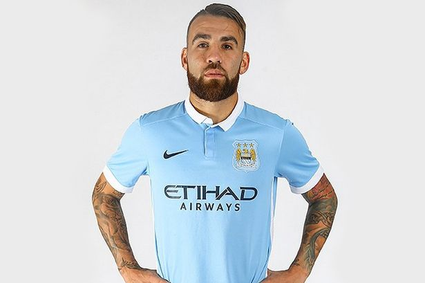
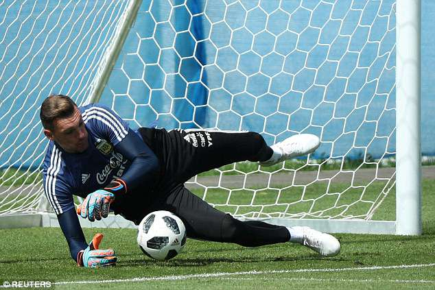
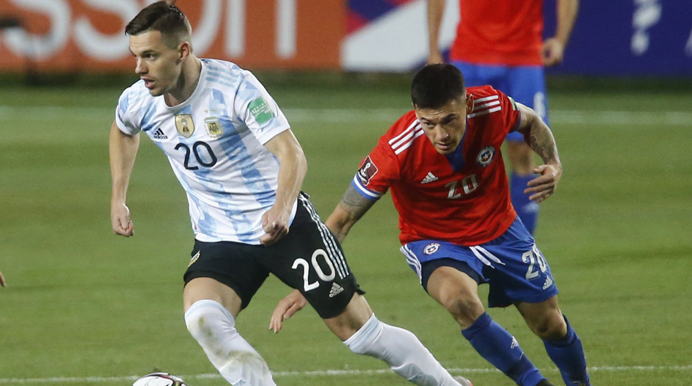
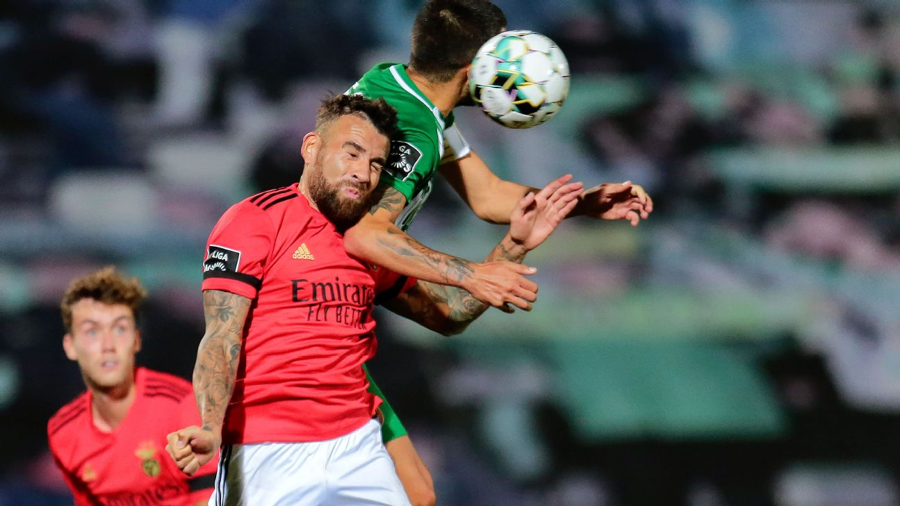

Nicolas Otamendi Defender.Manchester City,Argentina,Benfica
23
Nicolas Tagliafico Ajax,Argentina Manchester City,Argentina,Benfica
25

Lionel Messi Barcelona,Argentina,Paris Saint-Germain
100
Paulo Dybala Juventus,Argentina Manchester
40

Franco Armani Goalkeeper,Argentina Manchester
27
Angel Di Maria Midfielde Manchester City,Argentina,Benfica
22
Giovani Lo Celso Midfielde Manchester City,Argentina,Benfica
24

Giovani Lo Celso Midfielde Manchester City,Argentina,Benfica
37

Nicolas Otamendi Defender.Manchester City,Argentina,Benfica
23